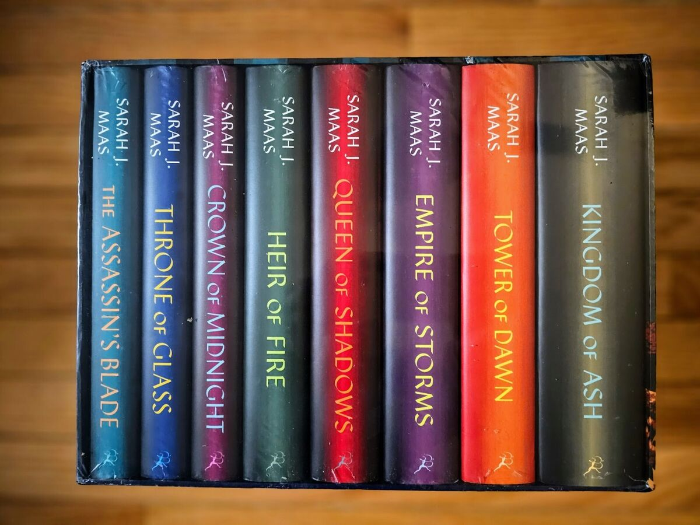
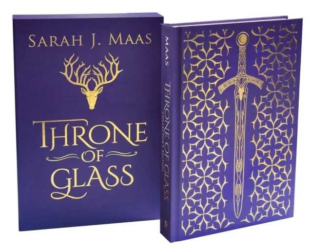
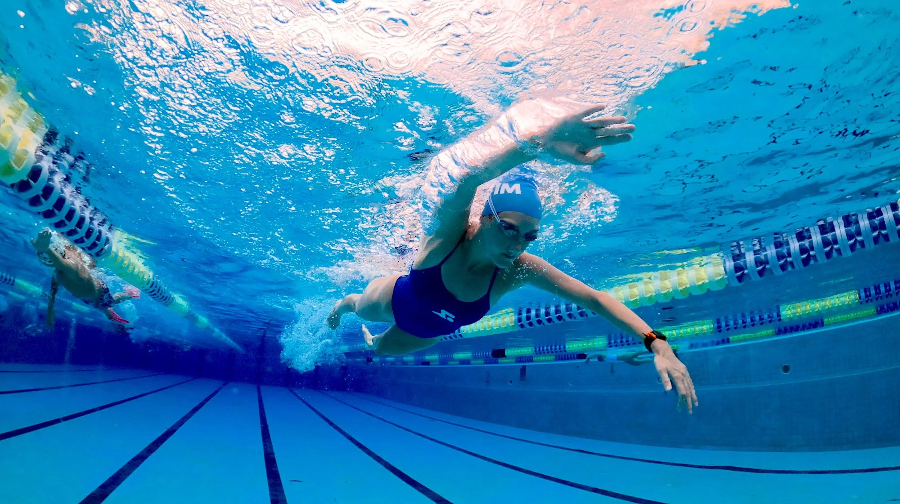
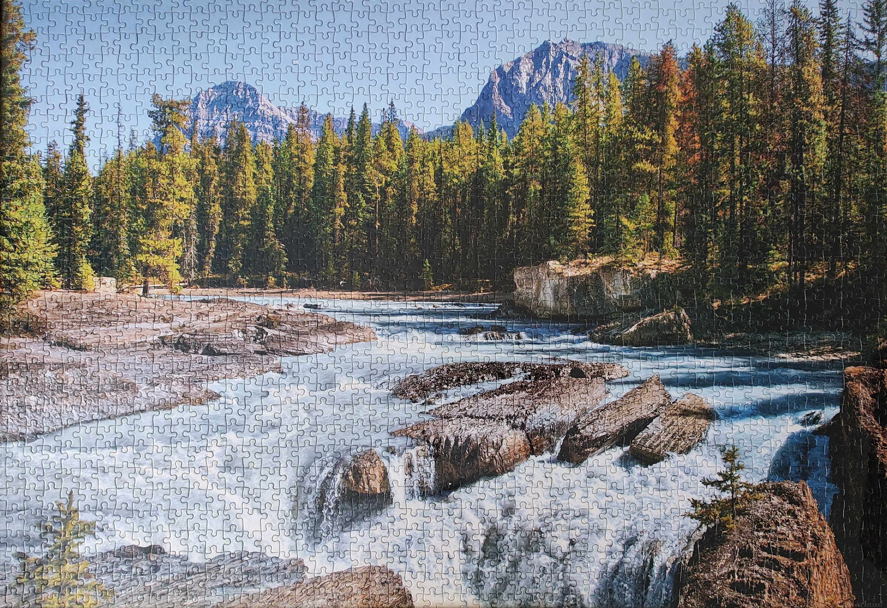
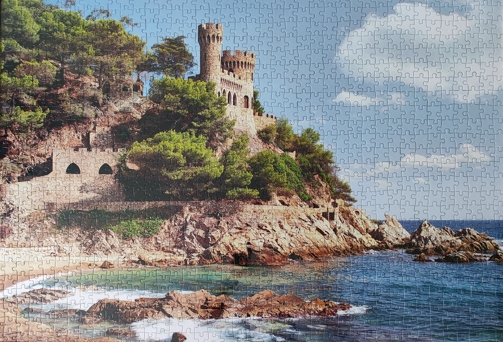

Computer Science & Mathematics
I have always been passionate about programming, particularly in C++. Writing code allows me to tackle complex problems, build efficient solutions from scratch, and refine my analytical thinking skills. I am also deeply interested in algorithms and data structures, as they are fundamental to optimizing software performance.
In addition to programming, I have a strong interest in mathematics, especially in areas like combinatorics, probability theory, and discrete mathematics. These fields are closely tied to computer science and play a crucial role in fields such as artificial intelligence, cryptography, and game theory. I enjoy applying mathematical concepts to real-world programming challenges and exploring how they can enhance software development.
Reading Books
Reading is my way of relaxing and expanding my horizons. It allows me to escape into different worlds, explore new perspectives, and take a break from daily life. My favorite genre is fantasy, as it immerses me in incredible adventures and captivating stories. One of my favorite books is Throne of Glass by Sarah J. Maas.


Sports
Staying active is important to me. I particularly enjoy swimming and cycling. Swimming is not only a great workout, but it is also incredibly relaxing and makes me feel refreshed. On the other hand, cycling gives me a sense of freedom and adventure. I love discovering beautiful places while riding, and at the same time, it’s an eco-friendly way to travel.


Solving Puzzles
Solving puzzles requires focus and patience, making it an excellent way to train my mind while also helping me unwind. I often listen to music while working on puzzles, which creates a calm and immersive atmosphere. The best part is the final result—seeing all the pieces come together is always rewarding. My favorite puzzles are those with landscapes, as they create breathtaking images once completed.

